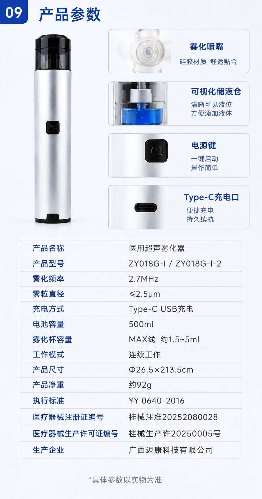

Key takeaways
- Do not combine model data because devices look similar or appear in the same image.
- Separate model specifications, labels, accessory packs and intended-use wording.
- Use a “pending official file” status rather than filling gaps with assumptions.
1. The risk of treating a product family as a single product.
It is common for catalogues to show more than one reference under a similar device family. That presentation is helpful for discovery, but it is not enough for product verification. A distributor may assume the same accessories, technical values or documents apply to both models. A brand owner may assume a label change is the only difference. Neither assumption is safe without the final model records.
In the Zegang source material, ZY018G-I and ZY018G-I-2 are listed together. The site therefore uses separate pages rather than an invented comparison table. This tells a buyer exactly what needs to be verified next.
2. What belongs in a model-specific record.
A useful model record identifies the model name and manufacturer, then separates visible product structure from confirmed technical and market information. It should include the final specification version, accessory configuration, product label, packaging record, applicable IFU and document-request pathway.
It may also show source-derived values with clear caveats. The important principle is transparency: a viewer can see whether a value is final, visible, source-derived or awaiting clarification.
3. Treat source values as evidence leads, not permanent copy.
Source images sometimes reveal useful facts such as a Type-C port, a visible reservoir, a model reference or a claimed operating frequency. They may also contain ambiguous or inconsistent values. For the current product image set, the battery field and dimension field require correction. Publishing them as finished international specifications would weaken trust rather than build it.

4. Use a model-control workflow before quotation or website release.
- Identify the exact model under review.
- Request final model-level specification and document set.
- Confirm accessory pack-out and labelling route.
- Record which values are final and which require clarification.
- Publish or quote only against the accepted model record.
This process benefits both sides. The buyer obtains a more reliable evaluation path, and the supplier avoids having preliminary brochure content treated as a binding product commitment.
5. Build the website around model records and related guides.
For SEO and conversion, a product family needs a catalogue page, a record for each model, a comparison-control guide, a document route and a focused contact path. That gives Google and B2B readers a clear topical structure without forcing all keywords into a single page.
It also gives the sales team better inbound leads: a visitor can request a ZY018G-I file, ask about ZY018G-I-2, or start a document discussion rather than submit a vague “send price” message.
Compare only after the official records are available.
Use the two separate model pages to identify the right next question. Request the final difference record before creating a model-comparison or distributor catalogue.
Request model file ↗